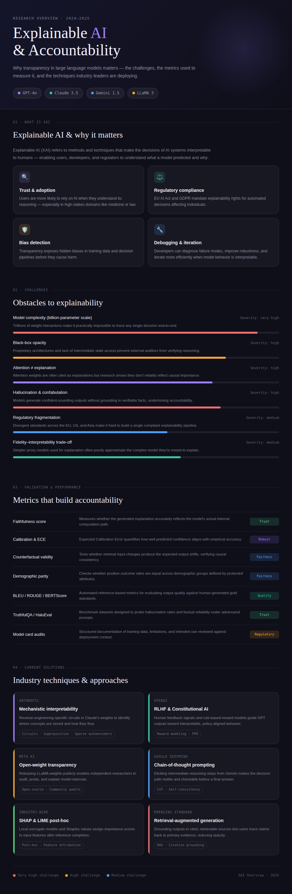

Introduction: This artifact is an infographic that explains the importance of explainable AI and accountability in modern machine learning systems.
Description: The infographic covers key ideas including what explainable AI is, why it matters, major challenges such as model complexity and bias, and common evaluation metrics used to measure accountability. It also highlights industry techniques such as RLHF, SHAP, LIME, and retrieval-augmented generation.
Objective: The goal of this artifact is to help learners understand why transparency in AI systems is important and how organizations work to make models more interpretable and trustworthy.
Process: I researched explainable AI concepts and identified the most important challenges, metrics, and solutions. I then simplified the content into clear sections and designed a structured infographic to present the information in a visual and easy-to-follow format.
Tools/Technologies Used: Canva for infographic design, ChatGPT for drafting and simplifying explanations, and image export tools to prepare the JPG file for web display.
References: Content based on public research and industry practices in explainable AI, including approaches used by organizations such as OpenAI, Anthropic, Google DeepMind, and Meta.
